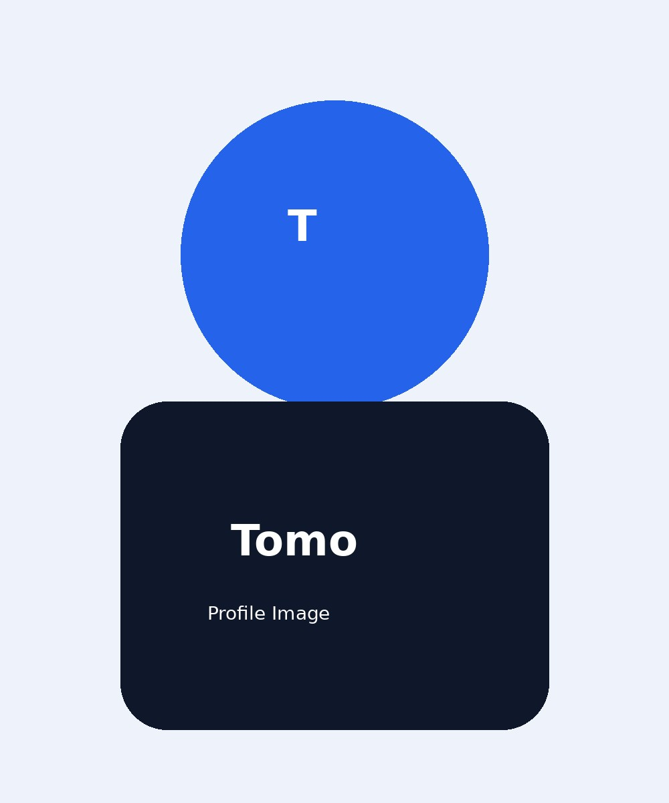
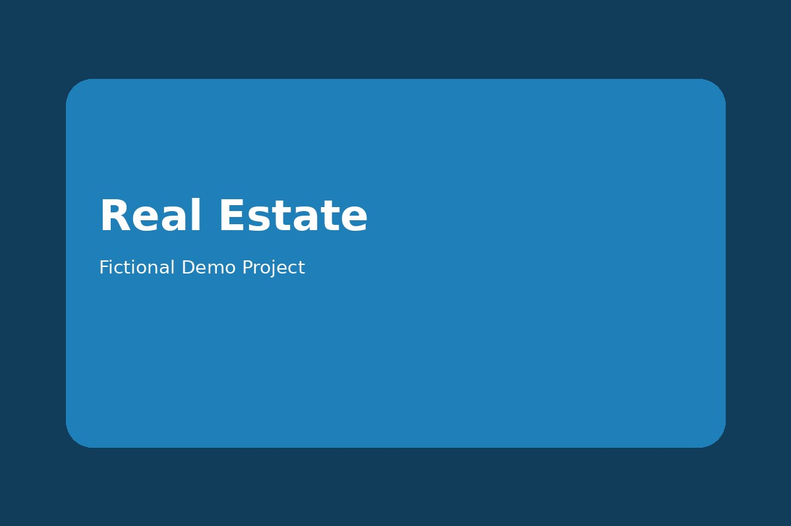

予約・問い合わせを増やしたい
電話、メール、予約フォームへ自然につながる導線を設計します。
FOR YOUR BUSINESS
電話、メール、予約フォームへ自然につながる導線を設計します。
写真、メニュー、強みを整理して分かりやすく掲載します。
仕事内容、職場の雰囲気、応募方法をまとめます。

ABOUT
大阪を拠点に活動しているフリーランスのWeb制作者です。店舗・中小企業向けに、予約・集客・採用などの目的に合わせたホームページやLPを制作しています。
※本人写真またはイラストをご用意いただければ差し替えできます。
FICTIONAL DEMO WORKS



PRICE
FLOW
予約・集客・採用などのお悩みと目的を確認します。
業務範囲、納期、修正回数、料金をご提示します。
契約後、原則として制作費の50％を着手金としてお願いします。
構成確認後にデザインとコーディングを進めます。
テストURLで確認いただき、契約範囲内で修正します。
了承後に公開し、残金50％をご請求します。
ファイル、アカウント、操作方法を引き渡します。
公式サイトの独自ドメイン・サーバーは原則としてお客様名義でご契約いただきます。取得・設定方法はご案内します。
業務範囲、納期、修正回数、支払い条件、キャンセル・解約条件、保守範囲を事前に書面で確認します。
FAQ
仮画像・仮文章で構成確認できます。正式公開前には写真と基本情報をご用意ください。文章の全面作成は別途お見積りです。
LPは2回、店舗・企業サイトは3回を基本とします。大幅な仕様変更は別途お見積りします。
可能です。お客様名義で契約いただき、設定をサポートします。
利用するフォームサービスやサーバー環境に合わせて対応します。
必須ではありません。お客様自身で更新する形も選べます。
原則として契約時50％、本番公開後50％です。
CONTACT
無料相談だけでも大歓迎です。店舗の予約・集客・採用など、現在のお悩みをお聞かせください。大阪を中心に全国オンライン対応しています。